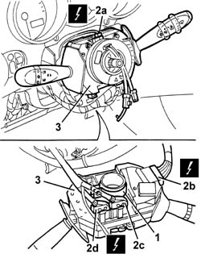
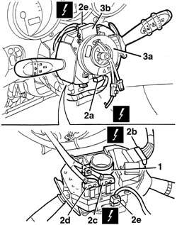

5550A12 complete stalk unit - r+r for versions with air bag
- Path
- Procedures > 55 ELECTRICAL EQUIPMENT > 5550 MANOEUVRING AND WARNING SIGNALS > 5550A stalk unit > 5550A12 complete stalk unit - r+r for versions with air bag
- Kind
- repair procedure (removal / refitting; the operation number is the code)
- Applies to
- all engines; all production periods
- Interactive page
- https://sloeber94.github.io/elrnDB-a147/en/#/3025570
Applies to: all engines; all production periods
 Removing
Removing
 Refitting
RefittingPlace the steering wheel in the centred position with the wheels straight.
4110A11 steering wheel - r+r for replacement or check for versions with air bag
7040A26 steering column trim - r+r
1. Loosen the band fixing the steering column switch unit.
2. Move the steering column switch unit slightly and disconnect the electrical connections (2a, 2b, 2c).
 | Name | Connector |
|---|---|---|
2a | Clock spring coupling |
| Name | Connector |
|---|---|---|
2b | Stalk unit |
| Name | Connector |
|---|---|---|
2c | Stalk unit |
| Name | Connector |
|---|---|---|
2d | Stalk unit |
3. Recover the stalk unit with the clock spring

Applies to: all engines; all production periods
If necessary, 5580C12 clock spring for air bag module on steering wheel r r
Applies to: all engines; all production periods
Refitting
RemovingCheck that the steering column switch unit is not damaged and, if necessary, conduct an electrical test on it.
Check that the wheels are straight (not steered)
If the clock spring is removed, 5580C12 clock spring for air bag module on steering wheel r r
Connect the electrical connections .
Refit the stalk unit with clock spring
Tighten the band fixing the steering column switch unit.
7040A26 steering column trim - r+r
4110A11 steering wheel - r+r for replacement or check for versions with air bag
Check the operation of the systems involved (lights, wipers, horns).
Applies to: all engines; all production periods; only with equipment: VDC
Removing
RefittingPlace the steering wheel in the centred position with the wheels straight.
4110A11 steering wheel - r+r for replacement or check for versions with air bag
7040A26 steering column trim - r+r
1. Loosen the band fixing the steering column switch unit.
2. Move the steering column switch unit slightly and disconnect the electrical connections (2a, 2b, 2c, 2d, 2e).
| Name | Connector |
|---|---|---|
2a | Clock spring coupling |
| Name | Connector |
|---|---|---|
2b | Stalk unit |
| Name | Connector |
|---|---|---|
2c | Stalk unit |
| Name | Connector |
|---|---|---|
2d | Stalk unit | H5D |
| Name | Connector |
|---|---|---|
2e | Steering sensor |
3. Keep the steering column switch unit and clock spring (3a).

Applies to: all engines; all production periods; only with equipment: VDC
If necessary, 5580C12 clock spring for air bag module on steering wheel r r
Applies to: all engines; all production periods; only with equipment: VDC
Refitting
RemovingCheck that the steering column switch unit is not damaged and, if necessary, conduct an electrical test on it.
Check that the wheels are straight (not steered)
If the clock spring is removed, 5580C12 clock spring for air bag module on steering wheel r r
Connect the electrical connections .
Refit the stalk unit with clock spring
Tighten the band fixing the steering column switch unit.
7040A26 steering column trim - r+r
4110A11 steering wheel - r+r for replacement or check for versions with air bag
Check the operation of the systems involved (lights, wipers, horns).
Topics linked from this page (9)
- 4110A11 steering wheel - r+r for replacement or check for versions with air bag
- 5580C12 clock spring for air bag module on steering wheel r r
- 5580C18 air bag module - r+r
- 7040A26 steering column trim - r+r
- D47 Clock spring coupling
- H5A Stalk unit ( Connectors )
- H5B Stalk unit ( Connectors )
- H5C Stalk unit ( Connectors )
- K58 Steering sensor
Topics that link to this page (24)
- I01 SIDE LIGHTS/NO. PLATE LIGHTS NOT WORKING
- I05 DIPPED HEADLAMPS NOT WORKING
- I06 MAIN BEAM HEADLAMPS NOT WORKING
- I10 DIRECTION INDICATORS / HAZARD WARNING LIGHTS / NOT WORKING
- I90 FOLLOW ME HOME FUNCTION IS NOT ACTIVATED
- J02 WINDSCREEN WIPERS NOT WORKING
- J03 SCREEN WASHER NOT WORKING
- J04 BACK WINDOW WIPER NOT WORKING
- J05 BACK WINDOW WASHER IS NOT WORKING
- 3330D11 brake servo - r r including seperation from master cylinder - facia lining removed for rhd version
- 3350E20 steering angle sensor r r
- 4110A30 Steering control shaft SUPPORT - R.R.
- 5020L10 additional heater system boiler - r r
- 5040A80 expansion/connection pipe - r r
- 5040B30 expansion valve (tube orifice) - r+r
- 5040C10 air conditioner box - r+r
- 5040C50 air conditioner heater radiator - r+r
- 5040C64 a/c evaporator - r+r
- 5040D76 air contitioner distribution flap control motor - r r
- 5040D84 air conditioner left hand air mixer flap control motor - r r
- 5040D86 air conditioner right hand air mixer flap control motor - r r
- 5040D90 air conditioner system wiring bundle - r r
- 5580A10 cruise control lever assembly - r+r
- 7040A10 instrument facia trim - r+r